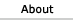

| |
|
|
|
|
 | |||||
IntroductionMSX supposedly stands for MicroSoft eXtented architecture. MSX and MSX-2 computers were built with Zilog Z80 8-bit 3.5MHz CPU and special graphics and sound co-processors. MSX standard (later known as MSX-1) was introduced in 1983 by Microsoft and ASCII Corporation of Japan. MSX developers had very ambicious plans: to make MSX a worldwide standard for home computers, like VHS was for home video. And this plan was partially realized: MSX became one of the most popular school and home computers in Brazil, Japan, USSR and many other countries for many years (from 1984 until 1989). Computers compatible with MSX and MSX-2 specs were produced by most major Japanese, Korean and some european brands (Sony, Phillips, Panasonic, Yamaha, Toshiba, Sanyo, Canon, Daewoo to name a few). The next generation MSX-2 standard was introduced in 1985, and it was incredibly innovative for it's time: 16/256 color videomodes, big colorful hardware accelerated sprites, Yamaha OPL FM synth, 720Kb 1.44" floppy disk drives. Starting with 1988 MSX became a little bit outdated, because new cheap and powerful 16-bit computers flooded the market: Amiga, Atari ST, Acorn Archimedes, SHARP X68000 and, ofcouse, IBM PC and PS/2 clones. In 1988 ASCII tried to get customer attention back by releasing MSX-2+ specs, which had several benefits in comparition to MSX-2. The last MSX standard was MSX TurboR. Those computers had many significant changes in hardware, Z80 was used mainly for compatibility with old software, while native programs used R800 RISC CPU. Both MSX-2+ and MSX-TurboR machines had built-in Kanji support and were distributed only in Japan and Korea. You can find more information about this great platform at The Ultimate MSX FAQ. In September 1990 I saw MSX computer for the first time. It was Yamaha MSX-2 KUVT. I wrote my first program on this computer using Turbo Pascal 3.0 for CP/M-80. I also played my first computer games on it. My most favorite game of all times is still Konami's Metal Gear. Vampire Killer, ZanacEx and Konami's Knightmare are also very good. MSX emulationToday it is very difficult to find a working MSX machine. But, thanks to hard work of emulator authors, we can run MSX applications and games on PC. The best MSX emulators in my opinion are fMSX and RuMSX. There are several other good emulators, but I prefer to use fMSX and RuMSX.
MSX resources on the netThe best place to start digging for MSX files, rom images, emulators and documentation is File Hunter website. But other sites are also very interesting. |